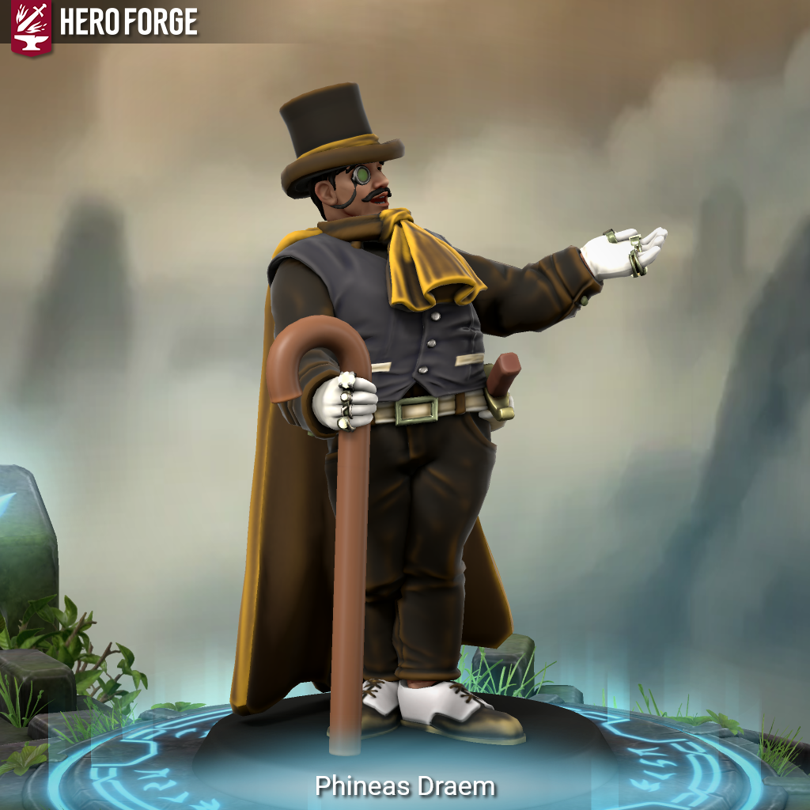

Phineas Draem - Is This Anything?

Meet Phineas Draem, Proprietor of Phin’s Finds.
He was never a warrior. Never an adventurer. Never a thief. He was a salesman.
Phin’s Finds occupied a crooked alley in the kind of neighborhood that doesn’t appear on city maps. Cramped, cluttered, lit poorly on purpose. The sort of shop where adventurers found oddities, nobles found things they couldn’t buy anywhere reputable, and scholars found things they weren’t supposed to touch. Phineas didn’t steal or pillage. Everything in his stock passed through someone else’s hands first. He simply had a gift for being the last person those hands sold to.
He built his business on charm, patience, and a network of whispers that stretched further than anyone knew. He out-negotiated rivals, cultivated desperate sellers, and kept careful track of who owed him what and who might need something quietly acquired. Over a lifetime of that work, card by card, he assembled his crowning piece – a nearly complete Deck of Many Things. Not a replica. Not a partial draw. The real thing, almost whole.
Then one night it was gone. The stock too. Everything. Break-in, betrayal, curse – he doesn’t know. He may never know. What he knows is that he woke up with no money, no goods, no shop, and no status. Only the road.
He is not built for the road. He knows this. But desperation has a way of expanding a man’s skill set, and it turns out that everything Phineas spent decades perfecting – reading people, running networks, saying exactly the right thing at exactly the right moment, hiring the right middlemen, maintaining appearances under pressure – translates surprisingly well to staying alive in places that would like to kill him. He ducks behind cover. He throws out distractions. He cuts through minds with words when steel would be slower. There is a hidden dagger, just in case. He has not had to use it yet. He intends to keep that record.
He is not chasing glory or gold. He is chasing stock. Artifacts, relics, cursed objects, forgotten magic. Anything with a story and a market. He wants his deck back. He wants his shop back. He wants to be, once again, the black market’s most indispensable dealer – and he is willing to go find the inventory himself.
Phineas Draem is a Rogue 3 / Bard 7 – Mastermind and College of Eloquence – and it shows. His silver tongue makes persuasion feel like a gift to the person being persuaded. His read of people borders on unsettling. He lies with the timing of a man who has rehearsed honesty so thoroughly he knows exactly when to abandon it. He has never seen real battle and does not intend to start now – but he has survived everything the road has thrown at him so far on fast talk, misdirection, and the quiet confidence of a man who knows more about the situation than anyone else present. The dagger is a last resort. The words are the weapon.
#iTA #isThisAnything #DnD #TTRPG #Homebrew #CharacterIntro #Rogue #Bard